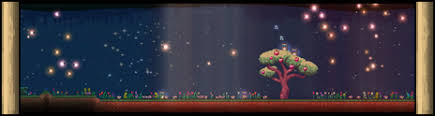

???
funny mod is hype. #1

funny mod is hype. #1

redeems the failed portals of past, despite being underground and obscure, the opposite of the REAL aether. At least this one is able to be found without ruining the hopes and dreams of millions who use console. #2

50% of the terraria community will hate me for this, but I follow the idea that Crimson is better than corruption in most facets, with the only inferiorities being music and #3

I'm not one to hate, the Corruption has things going for it, it is all preference though, worm scarf is more consistant but less clutch than full damage dodging from brain of confusion, and yes, the music is BANGING like crazy, but the boss fight is just a worm boss, which from playing modded, is far too common (DOG, Destroyer, Desert Scourge, Storm Weaver, ECT.) despite this, the biome is still quite hype, with some of the hardmode items being useful, putrid scent, scourge of the corruptor, cursed flame, but the crimson does many of those better.#4

This is a very nice starter biome. Simple, no specialness to it. just nice forests. Really good for making a main base due to it being the spawn location and easy to manage. #5
BY GOLLY THIS PLACE CAN BE HYPE AND PAIN, 1, the tortises are painful but give TURTLE armor then BEETLE armor, which are both very benificial for melee, jungle armor is the best pre-hardmode mage set imo, the weapons and accessories found here help all classes, blade of grass, mana flower, boomstick, and ivy whip respectively for their classes, music is banging too. Plantera theme is hype as a Pantera fan myself. #6

#7
#8

#9
The enemies here are few, but important, Harpies provide harpy feathers, obviously, but also the giant harpy feather, which, when combined with 20 souls of flight (like all crafted wings besides maybe a couple make Harpy wings, which are good early hardmode wings, for pre-mech activities. Plus the islands found here have excellent loot, from the chests, but the damselfish is a great source of income, with fishing in the sky pools being convienent pre-hardmode for money, and safe, with the wyvern not spawning yet. Still worse in comparison to SEVERAL other biomes though. #10

#11
#12
The astetic is really good but besides that it sux. #13
This place sucks to go through, sandstorms are a nusiance. UNDERGROUND DESERT IS PAIN. The Biome chest item is mid as heck unless ur doing summoner playthrough. Rolling cacti is my sleep paralysis demon #14

Funny lizards but thats really all. :( #15

Jungle armor > Space armor. #16